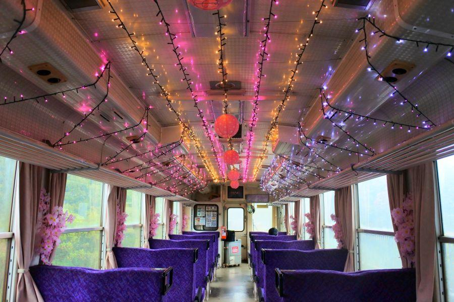
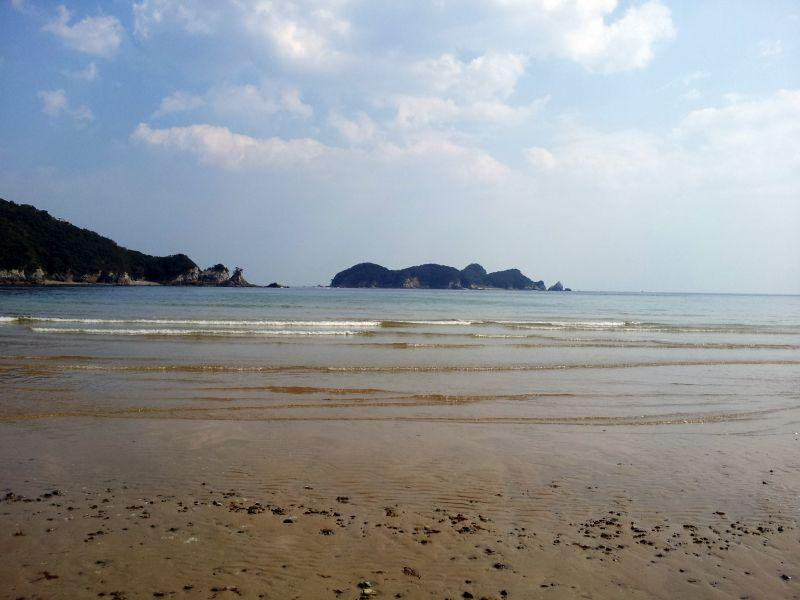
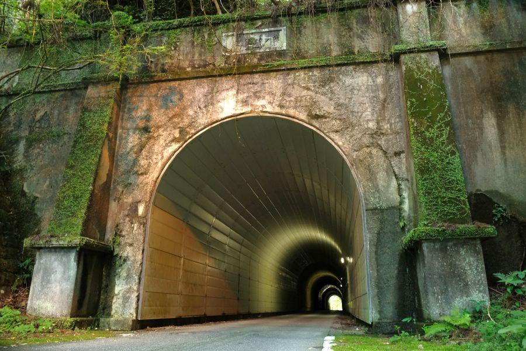

全長僅か8.5km。ミニ鉄道の終着駅 < 甲浦駅 / 高知県東洋町 >
「線路は続くよどこまでも」とは歌われるものの、様々な理由により必ずしも繋がっているわけではありません。その性質から辺鄙で静かな場所にあるのが終着駅の常ですが、その哀愁を感じるために「四国のみぎした」へやって来ました。
甲浦駅
甲浦駅(かんのうらえき / 高知県東洋町)
プラットホームは高架、駅舎は地上。施設に高規格が入り混じっている理由は、阿佐海岸鉄道がかつて国鉄線として計画されたことと、建設された時代が比較的新しかったため。
駅に訪れた時は誰も居ませんでした。日によっては甲浦婦人会さんによって観光案内やレンタサイクルの取り扱いが行われているようです。
発車時刻表 ※現在のものと異なります
海部(かいふ)－宍喰(ししくい)－甲浦(かんのうら)
の僅か8.5kmで運転される阿佐海岸鉄道・阿佐東線。この短い距離なので、全てが全区間ピストン運転であっても良さそうなものですが、そこは中間の宍喰駅に車庫と運転指令所(本社)がる関係で、宍喰駅までの区間列車が存在します。
以前は海部駅からJR線に入り牟岐駅へ直通する列車が設定されていましたが、平成31年(2019)のダイヤ改正で廃止されました。徳島方面に行くためには、現在は全て海部駅で乗り換えです。
高架部分にあるプラットホーム
こちらの階段が、高架部分にあるプラットホームへ上がる唯一の方法。
高架に上がりました。終着駅なので、ここから高知方面(手前)へ続く線路はありません。
周辺あれこれ
(三駅しかないため)3つしか存在しない駅名標。
表記の通り、高知県で最も東に位置する鉄道駅。県こそ高知に属しているものの、東洋町は文化や生活圏的には徳島圏。県都で見ても、高知市より徳島市の方が距離・時間共に近い事と、高知県側の室戸や安芸に行くためには、山(＝野根山街道)や海(＝淀ヶ磯)のような、交通を遮断するような地形が存在したためです。
海の難所に関しては、現在は国道55号が改良されて快走路となっているため存在しないに等しいですが、人の流れとしては徳島寄りなのは変わりません。
駅名標にあしらわれているのは、町内で使用されているキャラクターに、椰子の木やサーフィン、太陽など。
甲浦駅がある東洋町は気候が温暖で、浜辺に押し寄せる波はサーファーの間では有名。他ではポンカンの産地としても知られています。
駅近くのスポット。
白浜や生見ビーチ等、海の情報が掲示されています。
野根川・野根山街道は、藩政時代に参勤交代の道としても利用された歴史街道。幕末の二十三士の悲話で知られています。
同時期では、佐賀の乱を主導し土佐に逃れていた江藤新平が捕らえられたのが、ここ甲浦の地です。
「フェリー乗り場」とありますが、現在は廃止されていて航路は存在しません。
逆に言えば、このような古い情報であっても問題が起きないほど、利用客が少ない。県外から列車で訪れる人があまりいない、と言えそうです。
高千穂鉄道との縁
一面一線の甲浦駅は、列車の交換(行き違い)ができません。来た列車が折り返し発車します。
海部・宍喰方面から列車がやってきました。
同社が二両保有する車両の内、ASA-300形の方でした。
ASA-100形(しおかぜ) ※現役
ASA-200形(あさしお) ※廃車
のオリジナル車両が在籍していましたが、平成20年(2008)に200形が回送中の事故で破損したため廃車。その後やってきたのが
ASA-300形(たかちほ) ※現役
です。
その名の通り、宮崎県にあった高千穂鉄道から無償譲渡を受けて導入された車両。同線は平成17年(2005)に同地方を襲った台風14号によっていくつかの橋梁が流され、復旧工事が行われることなく廃止になっていました。
車両に付けられたプレートには、
「阿佐海岸鉄道 平成元年」とありますが、その裏にうっすらと
「高千穂鉄道 平成元年」と刻印されていることがわかります。
高千穂鉄道は廃線の経緯こそ壮絶なものがありましたが、在籍していた車両のその後の運命はおおむね良好。
旧沿線各地で保存され展示されているもの。
列車ホテル「TR列車の宿」として宿泊できるように改造されたもの。
JR九州に売却され改造、臨時特急「海幸山幸号」として活躍中のもの。
そして阿佐海岸鉄道に譲渡され、現役走行中のもの。
鉄道が廃線になった際、在籍していた車両の多くが明るい将来を歩むとは言えません。高千穂鉄道のように、突然の災害で廃止になった場合は尚更。同社に在籍していた車両の多くが、その後それぞれの場所で人々に必要とされていることは、旧所有者の理解と尽力があったことでしょう。
阿佐海岸鉄道のイベント
旧TR200形は現在ASA-300形となり、徳島県のキャラクター「すだちくん」と、東洋町のキャラクター「ぽんかんくん」のラッピング塗装が施されています。

阿佐海岸鉄道では各種イベントが開催されていますが、年間を通じて行われているのが「イルミネーション」

春の「お花見列車」
夏の「天の川列車」
冬の「イルミネーション列車」
電飾ではありませんが、夏には車内に風鈴を吊るして音色で涼を楽しむ「風鈴列車」もあります。
夜にここまで来れないよ！
ご安心ください、昼間も点灯が行われています。阿佐海岸鉄道・阿佐東線はトンネル区間が多いため、明るい日中でもイルミネーションを楽しむことができます。
発車、その後
そろそろ発車の時間です。
元来た線路を走って、終点海部駅を目指します。
列車が発車した後の甲浦駅。
到着前、発車前。そして発車後。いずれも駅周辺に人が現れることはありませんでした。
平成になって開業した路線なので既にマイカーが普及していたことと、沿線人口が少ないこと。それらを鑑みた上で採算度外視で開業したため、経営を取り巻く環境が厳しいのは仕方ないことなのかもしれません。
辛くもこの世に誕生した阿佐海岸鉄道。今度訪れるときは「乗って支援」→「あさてつ乗車レポート」を行いたいと思います。
甲浦駅
< 自家用車 >
高松駅から 約3時間10分、155km
徳島阿波おどり空港から 約2時間10分、98km
高知龍馬空港から 約2時間10分、100km
< 公共交通機関 >
阿佐海岸鉄道・阿佐東線甲浦駅下車
※ 主な地点からの最速・最短距離
近隣・関連記事

2018,8/28 列車を下りたら、徒歩0分で海水浴。夏だけの臨時駅 < 田井ノ浜駅 / 徳島県美波町 >

2018,11/14 終戦間際に発生した列車空襲事件 < 那賀川橋りょう / 徳島県阿南市 >

2018,12/8 ユニークな駅名の高知県の鉄道交通中心地 < 後免駅 / 高知県南国市 >

2018,12/26 国の将来を憂い殉じた二十三名の志士たちの墓所 < 二十三士墓所・福田寺 / 高知県田野町 >

2019,1/1 雄大な太平洋を存分に楽しむことができるローカル線・前編 < ごめん・なはり線 / 高知県東部 >

2019,1/7 雄大な太平洋を存分に楽しむことができるローカル線・後編 < ごめん・なはり線 / 高知県東部 >

2019,6/30 日本最古のコンクリート製トンネル < 松坂隧道 / 徳島県牟岐町 >

2019,7/6 江戸を東京と改めた男の最期の地 < 江藤新平遭厄記念碑 / 高知県東洋町 >

2019,7/12 土佐の長宗我部元親、他國侵攻の契機となった事件 < 島弥九郎事件 / 徳島県海陽町 >

2019,7/18 前身は徳川時代？山中の古トンネル < 猪ノ垰隧道 / 徳島県海陽町 >